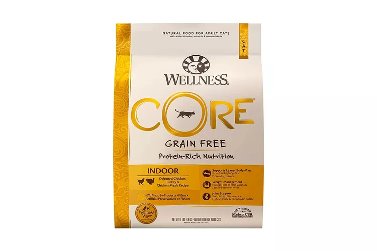

Asparagus
Vegetable
Your cat might enjoy a small serving of steamed, chopped asparagus once in a while.
Make sure it is cooked and cooled.

Broccoli
Vegetable
Broccoli is considered non-toxic and can be served steamed and cooled to cats.
Remember to only feed this as a rare treat and in small quantities.

Carrots
Vegetable
Cats can definitely eat steamed carrots.
They are high in fiber and packed with a bunch of yummy nutrition.

Green Beans
Vegetable
Green beans are considered safe for cats, and they are a
good source of fiber, protein, and healthy vitamins.
Pumpkin
Vegetable
Pumpkin is a great source of fiber and vitamins for your cat.
Pumpkin can also help with issues around constipation or even
complications surrounding impactions due to hairballs.
Spinach
Vegetable
Cats naturally like leafy greens, and spinach carries
quite a few beneficial vitamins for your cat.
Instinct Original Grain-Free Pâté
Wet Can Food
Chicken, turkey, and chicken liver make a rich, satisfying high-protein meal.
Purina Pro Plan True Nature Turkey & Chicken Entrée
Wet Can Food
This high-protein poultry recipe is a great diet for most adult cats.
Fancy Feast Grilled Chicken Feast in Gravy
Wet Can Food
This recipe leads with grilled chicken.
Merrick Purrfect Bistro Chicken Recipe Pâté
Wet Can Food
This chicken recipe is packed with protein along with antioxidants and omega-3 fatty acids.
Tiki Cat Puka Puka Luau Succulent Chicken
Wet Can Food
Shredded chicken in chicken consommé is designed to engage even picky eaters.
Wellness Pâté Chicken Entrée
Wet Can Food
The proteins in this smooth pâté come from chicken and turkey.
Crave Indoor Adult Cat Food
Dry Can Food
It comes in various flavors, including chicken, chicken with salmon,
salmon with ocean fish, turkey, chicken, and duck blend.
Blue Buffalo Tastefuls Weight Control Adult Dry Cat Food
Dry Can Food
It provides an optimal blend of protein and calories to help
your cat achieve and maintain their ideal body mass.
Real deboned meat is the first ingredient.
Orijen Cat & Kitten Dry Food
Dry Can Food
It's formulated with fresh, whole ingredients like free-range chicken,
cage-free eggs, and wild-caught fish, providing your
developing kitten with the nutrients they need to grow.
Royal Canin Indoor Dry
Dry Can Food
This cat food contains optimal portions of chicken meal, animal fat, vegetable fiber,
carbohydrates, vitamins, and minerals. The highly digestible and
metabolizable ingredients keep your adult cat healthy and satisfied.
Castor & Pollux Organix
Dry Can Food
This grain-free dry cat food is cooked in a certified organic kitchen.
The number-one ingredient is free-range chicken, which is combined
with a nutritional superfood blend of cranberries, coconut oil, and flaxseed.

Wellness Core
Dry Can Food
The recipes contain real poultry or fish as the main ingredient and includes animal proteins
and fats, amino acids, vitamins, minerals, and probiotics.
Notes:
Feeding your cat the appropriate amount of a well-balanced diet is vital to the maintenance
of overall health and well-being, just as eating a well-balanced diet is for us.
In order to understand how and what to feed cats, it is necessary to understand how
the nutritional requirements of the cat have developed through the process of biological
evolution.